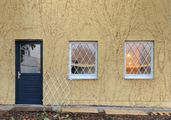
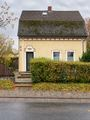

-
Human-Robot Repair2026
Können intelligente Maschinen helfen, Reparatur zu strukturieren und auszuführen? In unserem Workshop „Actionable Repair“ auf der ROB|ARCH 2026 an der Aarhus School of Architecture untersuchten und reparierten neun Teilnehmer drei Tage lang eine Fachwerkecke im Maßstab 1:1 mit geschädigten Hölzern. Sie kartierten die Schäden in einer Web-Anwendung und entwickelten mit einem multimodalen KI-Assistenten Reparaturstrategien als nachvollziehbare Abfolgen von Arbeitsschritten. Ein mobiler UR20-Roboter riss die Schnittlinien an, scannte die Kontaktflächen und fräste passende Einsatzstücke, die die Teilnehmer einpassten. Entscheidungen blieben vorrangig beim Menschen. Gemeinsam mit Avishek Das, Begüm Saral und Kathrin Dörfler an der Professur für Digital Fabrication der TU München.
-
Separate Wohneinheit

2026Umbau und Neuordnung eines freistehenden Wohnhauses in Bonn aus dem Jahr 1958. Der bestehende Grundriss wird überarbeitet, Bad und Küche werden neu angeordnet und an die heutige Nutzung angepasst. Durch das Abtrennen und den Ausbau der ehemaligen Waschküche und der Abstellräume entsteht im Untergeschoss eine eigenständige Wohneinheit mit separatem Eingang. Wenige, gezielte Eingriffe in den Bestand schaffen so eine zweite, vollwertige Wohnung, ohne den Charakter des Hauses zu überformen. Entwurf und Planung, derzeit in Ausführung.
-
Haus mit Auge

2025Ein kleines Wohnhaus mit verzierter Putzfassade, über dessen Eingang ein ornamentales Auge sitzt. Nach längerem Leerstand wird das Haus umgebaut und in zwei Wohneinheiten geteilt. Das Budget ist gering, deshalb bleibt vom Bestand so viel wie möglich erhalten: Wände, Fachwerk und Öffnungen werden nur dort verändert, wo die neue Aufteilung es verlangt. Für das Erdgeschoss entstanden zahlreiche Grundrissvarianten. Eine zentrale Frage war dabei, wo die zweite Wohnung ihren eigenen Eingang bekommt. Das Haus erhält ein zweites Auge, ohne dabei zu schielen.
-
From Structure to Action2025
Diese Masterarbeit an der Professorship of Digital Fabrication der TU München, betreut von Prof. Kathrin Dörfler und Begüm Saral, fragt, wie künstliche Intelligenz zur architektonischen Reparatur als systematischer und zugleich kreativer Entwurfspraxis beitragen kann. Sie entwickelt ein multimodales Framework, das unstrukturierte Informationen über ein beschädigtes Objekt [Fotos, Skizzen, Notizen, Messungen] in strukturierte, fabrizierbare Entwurfsentscheidungen überführt. Es verbindet drei Schritte: Wissen über das Objekt erzeugen, Entwürfe und Arbeitsschritte generieren und die Reparatur vor Ort anleiten, wobei Rückmeldungen wieder in das Modell einfließen. Anhand zehn geretteter Stapelstühle wird gezeigt, wie menschliche Expertise und maschinelles Schließen zusammenwirken, um aus einem einzelnen Schadensfall eine situierte, herstellbare Reparaturantwort abzuleiten.
-
Waldfriedhofskapelle Rhöndorf2022
Eine fortlaufende Forschungs- und künstlerisch-aktivistische Auseinandersetzung mit der Waldfriedhofskapelle in Rhöndorf, einem feinen Beispiel sakraler Nachkriegsarchitektur. Die Arbeit dokumentiert den Bau, ordnet ihn baugeschichtlich ein und macht seinen kulturellen Wert öffentlich sichtbar. 2024 wurde ein Abrissantrag der Stadtverwaltung nach öffentlicher Besorgnis und erneuter Diskussion über die Bedeutung des Bauwerks zurückgezogen. Inzwischen ist die Kapelle instand gesetzt: ein Beleg dafür, wie sorgfältige Vermittlung den Erhalt eines bedrohten Gebäudes mittragen kann.


-
Beamtenwohnung Bonn2023
Sanierung und Innenausbau einer Wohnung in einem Nachkriegsbau in Bonn. Aus einem kompakten, in die Jahre gekommenen Grundriss werden mit wenigen, präzisen Eingriffen neue Beziehungen zwischen den Räumen geschaffen sowie zu Balkon und Garten. Oberflächen, Einbauten und Licht werden so überarbeitet, dass die ursprünglichen Qualitäten der Wohnung lesbar bleiben und zugleich ein zeitgemäßer Wohnkomfort entsteht. Entwurf und Innenausbau, realisiert.
-
Unterstand2024
Entwurf für einen robusten und funktionalen Fahrradunterstand, der auch Lastenrädern Platz bietet. Die Konstruktion ist bewusst einfach und langlebig gehalten und lässt sich an unterschiedliche Standorte anpassen. Im Rahmen der Konzeption wurde untersucht, das Dach mit Solarmodulen einzudecken, sodass der Unterstand neben dem Wetterschutz auch Strom erzeugen kann.
-
ZAKK Gartenstuhl2024
ZAKK kann fliegen. ZAKK kann eintauchen. ZAKK ist variabel, ZAKK ist haltbar. Der Gartenstuhl entsteht vollständig aus einfachen Baumarkt-Teilen: Erdhülsen bilden das Gestell, ein Kellerfenstergitter wird zur Sitz- und Rückenfläche. Verzinkt und wetterfest ist ZAKK für den dauerhaften Einsatz im Freien gedacht. ZAKK ist ein Objekt, das aus genormten Halbzeugen mit minimalem Aufwand ein eigenständiges Möbel macht.

-
Free/Bird2024
Eine parametrisch gesteuerte Holzkonstruktion für ein Bauteillager auf einem SBB-Areal in Zürich, entworfen vollständig in der virtuellen Realität im Maßstab 1:1. Statt mit physischen Modellen wird der Entwurf als begehbarer Raum entwickelt und präsentiert: Bauteile werden in der VR-Software RADii direkt gesetzt, geprüft und angepasst. Die Arbeit entstand gemeinsam mit Lancelot Burwell im Immersive Studio von Gramazio Kohler Research an der ETH Zürich und lotet aus, wie sich räumliches Entwerfen verändert, wenn Maßstab und Körper unmittelbar Teil des Werkzeugs werden. Foto VR-Arena: Gramazio Kohler Research, ETH Zürich. Artikel
-
Harboring Histories2023
Reluctant Relics — Memories of a Molecule ist ein spekulativer Katalog für ein Palermo der Zukunft, in dem Denkmäler, Erzählungen und Artefakte zu einem architektonischen Bühnenstück verschmelzen. Die Arbeit verhandelt, wie eine Stadt mit ihren widerständigen, unbequemen Überresten umgeht und welche Geschichten sie für künftige Generationen aufbewahrt. Entstanden gemeinsam mit Virginia Zaretskie im Studio Meteora am Lehrstuhl für Digital Architectonics von Prof. Dr. Ludger Hovestadt an der ETH Zürich, verbindet das Projekt Recherche, Erzählung und Entwurf zu einer offenen Auseinandersetzung mit Erinnerung und Erbe. [PDF]
-
Versöhnungskirche Dachau2023
Bauaufnahme eines Bauteils der Versöhnungskirche auf dem Gelände der KZ-Gedenkstätte Dachau, die Helmut Striffler 1965 bis 1967 in Sichtbeton errichtete. Striffler verzichtete im gesamten Bau auf rechte Winkel, als Zeichen des Protests gegen die Ordnung des Lagers. Untersucht wurde die bis zu fünf Meter hohe, fast einen Meter starke Wand mit ihrer Auskragung, die den tiefsten und engsten Punkt des Weges in die Kirche markiert. Aus rund 690 Fotos entstand ein photogrammetrisches Modell. Auf den daraus abgeleiteten Orthofotos sind Material, Bauspuren und Schäden kartiert. Pläne und Briefwechsel zeigen, dass in der scheinbar massiven Wand eine Dämmschicht aus Styropor liegt. Brettabdrücke, Arbeitsfugen und Versätze in der Schalung erlauben es, den Bauablauf in einzelnen Betonierabschnitten zu rekonstruieren, die ein Modell Schritt für Schritt zeigt. Entstanden gemeinsam mit Alireza Yadollahisheikh an der Professur für Neuere Baudenkmalpflege der TU München (Prof. Dr. Andreas Putz, Meltem Çavdar).
-
RoboSgraffito2023
Traditionelle Putztechniken wie Kratzen, Schleifen, Hobeln, Ziehen und Stempeln werden in robotische Bewegungsabläufe übersetzt, um mehrschichtige, mehrfarbige Fassaden herzustellen. Das Projekt verbindet ein altes handwerkliches Wissen mit der Präzision und Wiederholbarkeit roboterbasierter Fertigung und fragt, wie sich überlieferte Oberflächentechniken in einen zeitgenössischen, digital gesteuerten Prozess überführen lassen, ohne ihren materiellen Reichtum zu verlieren. Entstanden an der TU München, betreut von Prof. Andreas Hild und Prof. Kathrin Dörfler.
-
Structural Patterns2023
Eine Untersuchung von Gleichgewicht in architektonischen Strukturen durch stereotomische Prinzipien, gezielt gesetzte Hohlräume und ineinandergreifende Geometrien. Über digitale Simulation und physische 3D-Drucktests wird ausgelotet, wie Lastabtrag, Materialeinsatz und Form zusammenhängen und wie sich aus dem Prinzip des Steinschnitts neue, materialsparende Tragmuster ableiten lassen. Forschung und Prototyping an der Professur für Structural Design der TU München.
-
Rheinschwimmbad2022
Ein schwimmendes Flussbad auf dem Rhein mit Saunaturm, Badehallen und Restaurant in monolithischen Baukörpern. Die Bachelorarbeit an der TH Köln macht die stark wechselnden Wasserstände des Flusses sicher nutzbar und zugleich zum räumlichen Erlebnis: Eine bewegliche Rampenfassade reagiert dynamisch auf den Pegel und hält das Bad bei jedem Wasserstand barrierefrei zugänglich. So wird die Unbeständigkeit des Flusses vom Problem zum architektonischen Thema.
-
Wohnen in Nippes2019
Ein Wohnungsbauprojekt an der TH Köln für eine Baulücke in Köln-Nippes. Der Entwurf mischt unterschiedliche Wohnungstypologien, aktiviert die Erdgeschosszone für gemeinschaftliche und gewerbliche Nutzungen und entwickelt eine Fassade, die im Dialog mit dem historischen Straßenraum steht. Ziel ist ein dichter, lebendiger Baustein, der die Lücke schließt und zugleich das Quartier im Erdgeschoss belebt.
Viele Dinge, die wir benötigen, sind schon da. Sie alle sind es wert, erhalten zu werden. Bei Gebäuden ist das eine Entwurfsaufgabe, die sich immer wieder stellt. Dafür braucht es Wissen, Werkzeuge und Menschen, die kollaborieren. Doch genau daran mangelt es oft. Wie könnte eine Reparaturgesellschaft aussehen? Und wie statten wir sie mit wirkungsvollen Instrumenten aus?
Ich plane Umbauten und forsche an der TU München zu Reparatur und digitaler Fabrikation.
Ausbildung
- 2022–2025TU München, Architektur M.A. / Mentorenprogramm Computational Methods, Abschluss mit Auszeichnung
- 2023–2024ETH Zürich, Architektur Masterstudiengang / Stipendiat
- 2018–2021TH Köln, Architektur B.A.
Erfahrung
- seit 2026Wissenschaftlicher Mitarbeiter / Professorship of Digital Fabrication, TU München, im Munich Institute for Robotics and Machine Intelligence (MIRMI) und am MIT CSAIL, Cambridge (US)
- seit 2026Junior-Architekt AKNW / freischaffende planerische Tätigkeit in Bad Honnef und München
- 2023–2026Wissenschaftliche Hilfskraft / Professorship of Digital Fabrication, TU München
- 2023–2024Wissenschaftliche Hilfskraft / Gramazio Kohler Research, ITA, ETH Zürich
- 2021–2022Projektassistenz / Atelier Max & Jakob Giese, Gehlert
- 2020–2021Studentischer Prodekan Architektur / gewählter Vertreter an der TH Köln
- 2019–2021Tutor für Entwurf und Konstruktion / Prof. Carola Wiese, TH Köln
- seit 2016Selbstständige Tätigkeit / 3D-Druck und Design
Lehre
- 2026Renovierung Fritz-Pflaum-Hütte / Masterstudio, Professorship of Digital Fabrication, TU München, in Zusammenarbeit mit der Professur für Architektur und Human Augmentation, ETH Zürich, mit Prof. Kathrin Dörfler, Prof. Daniela Mitterberger und Dr. Lidia Atanasova, arc.ed.tum.de
- 2026Actionable Repair: Multimodal AI for Situated Human–Robot Timber Repair / Workshop, ROB|ARCH 2026, Aarhus School of Architecture, mit Begüm Saral und Dr. Avishek Das, robarch2026.org
- 2026Actionable Repair via Multimodal AI / Workshop, Future of Construction Symposium, ETH Zürich, mit Begüm Saral sowie Laurence Crouzet, Adrian Pöllinger und Wen-Shan Cui von der Professur für Konstruktionserbe und Denkmalpflege, ETH Zürich, futureofconstruction.ethz.ch
Publikationen / Vorträge
- 2026Translating Intention: AI-Assisted Model Generation for Collaborative Human–Robot Construction / mit Avishek Das, Begüm Saral, Lidia Atanasova und Kathrin Dörfler, in Construction Robotics, DOI 10.1007/s41693-026-00205-0
- 2025The Architect as Toolmaker: AI as Instrument in Architectural Repair / Future(s) of Educational Design Symposia, TUM Center for Educational Technologies
- 2025From Structure to Action: Machine Reasoning and the Logics of Repair / Masterarbeit, TUM School of Engineering and Design, publiziert via mediaTUM
- 2025From Prototype to Product: Start-ups and Intellectual Property in Digital Fabrication / mit Marcel Studer und Dominik Reisach, Professur für Konstruktionserbe und Denkmalpflege (Prof. Silke Langenberg), Startup Architecture Symposium, ETH Zürich
- 2025From Material to Market: How Materiality Drives Innovation in Architectural Technologies / mit Marcel Studer und Dominik Reisach, Professur für Konstruktionserbe und Denkmalpflege (Prof. Silke Langenberg), Architecture & Patents Conference, ETH Zürich
- 2024Die Neue Kapelle auf dem Waldfriedhof / eingeladener Vortrag, Bürgerhaus Rhöndorf
- 2024Den Erhalt der Kapelle unterstützen / Gastbeitrag, Honnef Heute
- 2022Die Waldfriedhofskapelle in Rhöndorf / ISBN 978-3-00-071896-0
Mitgliedschaften
- seit 2026Deutscher Werkbund Bayern
- seit 2026initiative.umbau Köln
- seit 2025Rheinischer Verein für Denkmalpflege und Landschaftsschutz
- seit 2022Verein Gutenberghaus Bad Honnef e.V.
- seit 2022Rhöndorfer Bürger- und Ortsverein